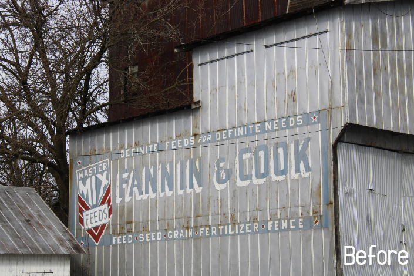
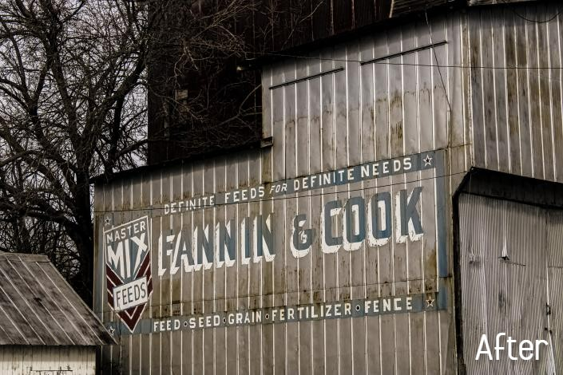
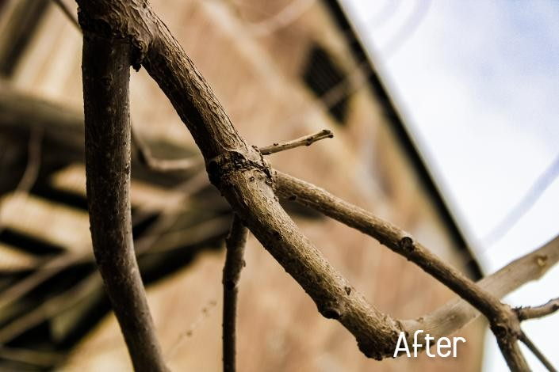
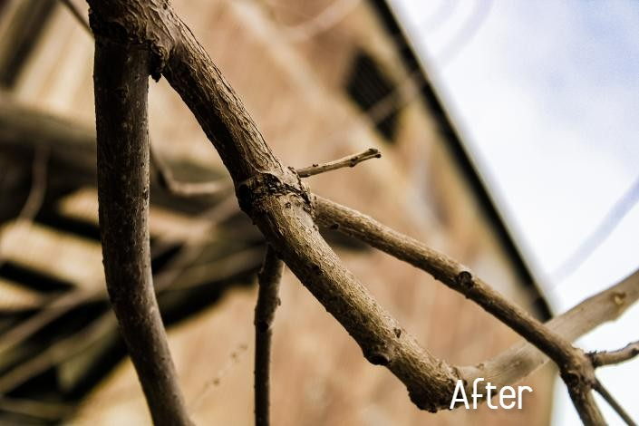
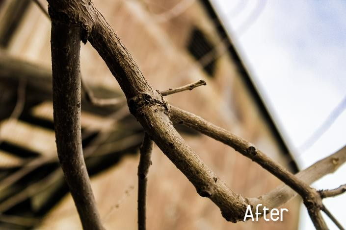
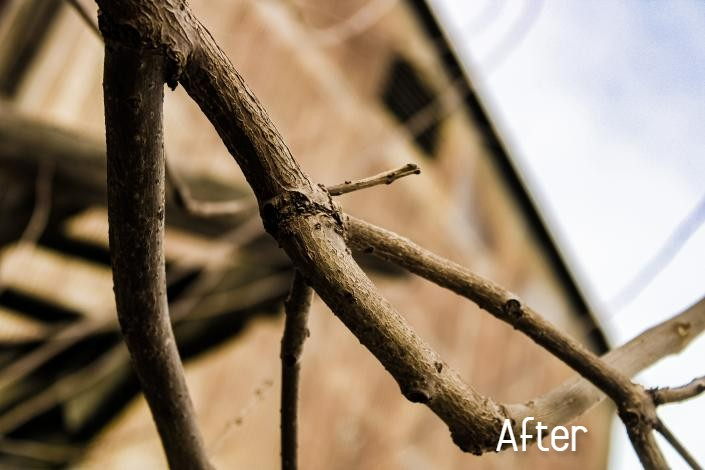

 


I'm new to this "Software Development" career path, so I don't have any HTML, JavaScript, CSS skills.
What I will say is that I am very hardworking and responsible. I think I got that from my dad. I'm also willing to work out solutions. I love solving problems.
I love to help people. I think that's my biggest asset. I'm really good with helping people and their problems and I care a lot.
Lastly, and probably one of the best ones is that I am willing to learn new skills. I love learning That's part
of why I took this program.
I also can be very creative, which helps me to be able to style websites nicely. A good example of this would be some of my photos
I've taken and edited.
I have put some Before and After photos below.
Click the arrows to see the before and after photos!

This last skill came from one of my sisters.
Which, in my opinion, is my favorite skill.